Fait par Tanguy Gilson
Accueil
Les armes
Les agents
Les maps
 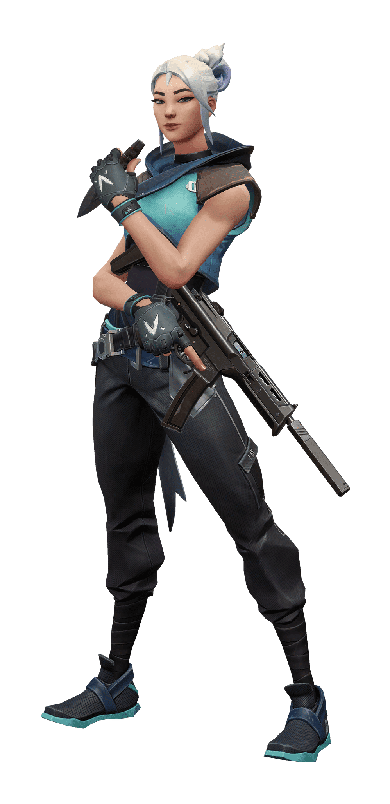
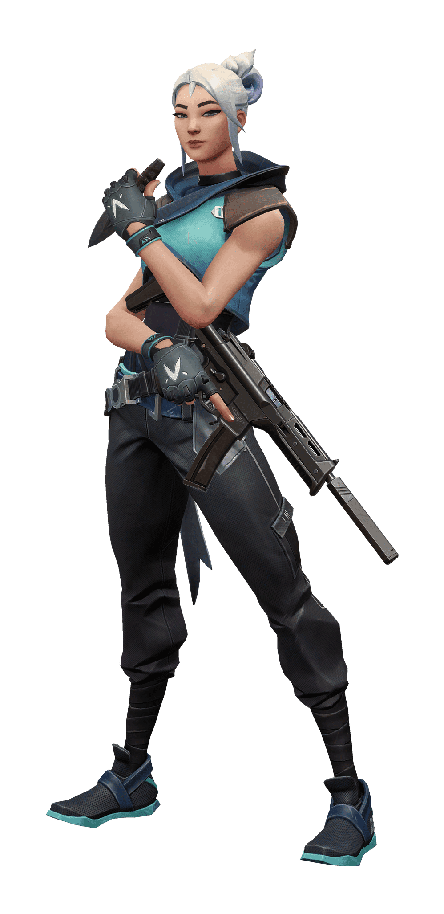
 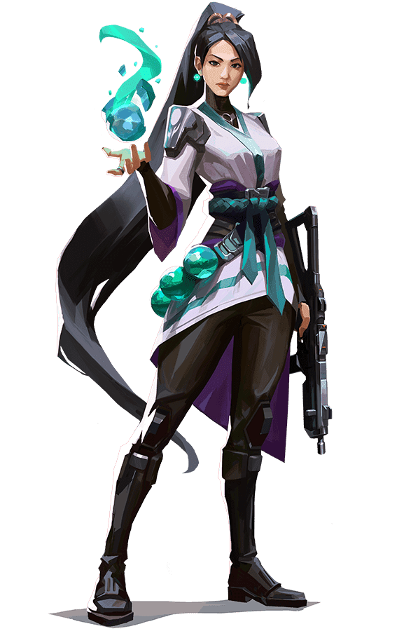
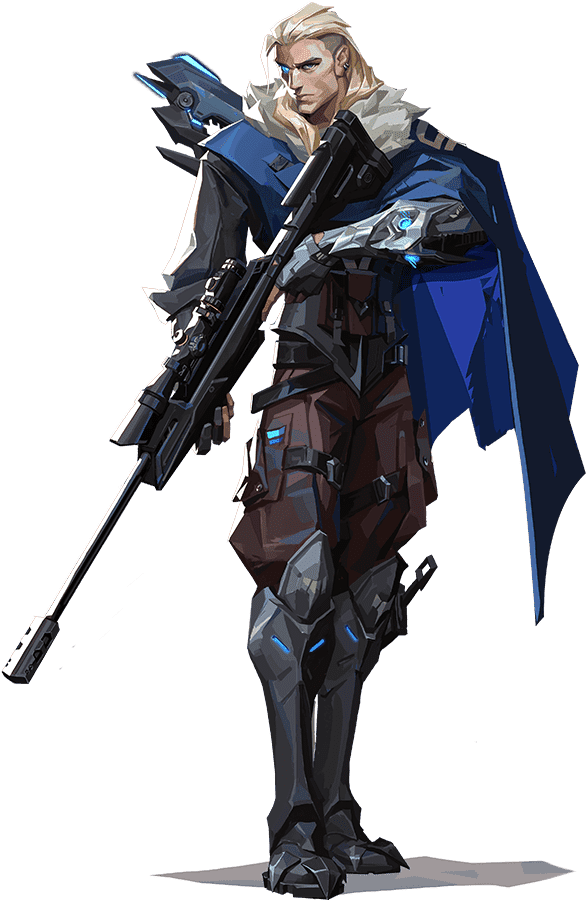
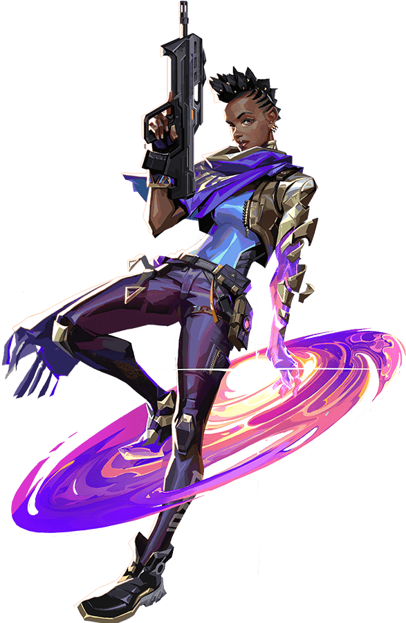
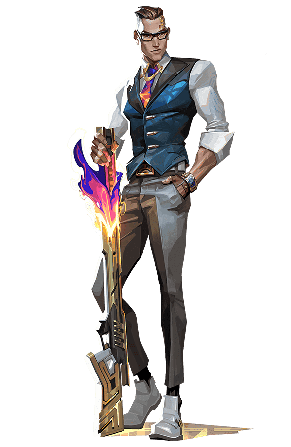
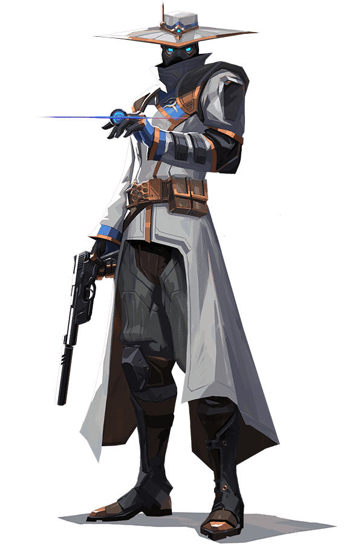
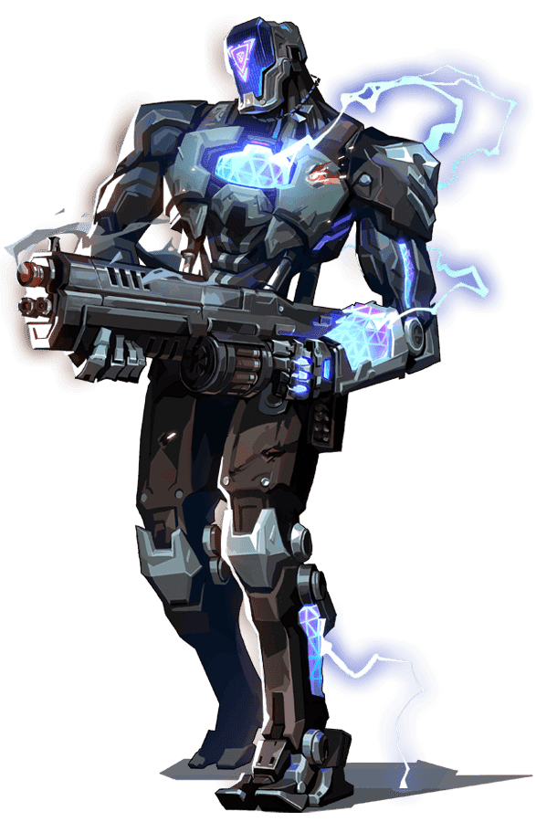
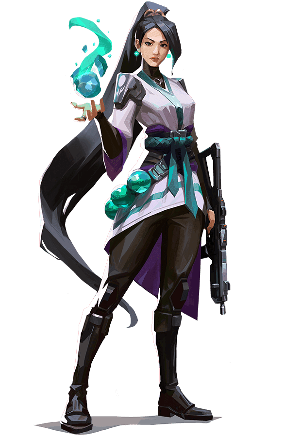
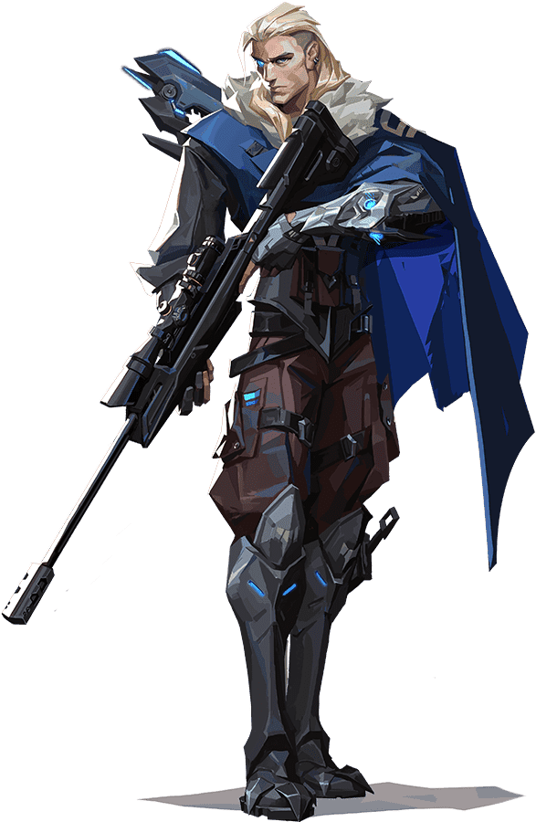
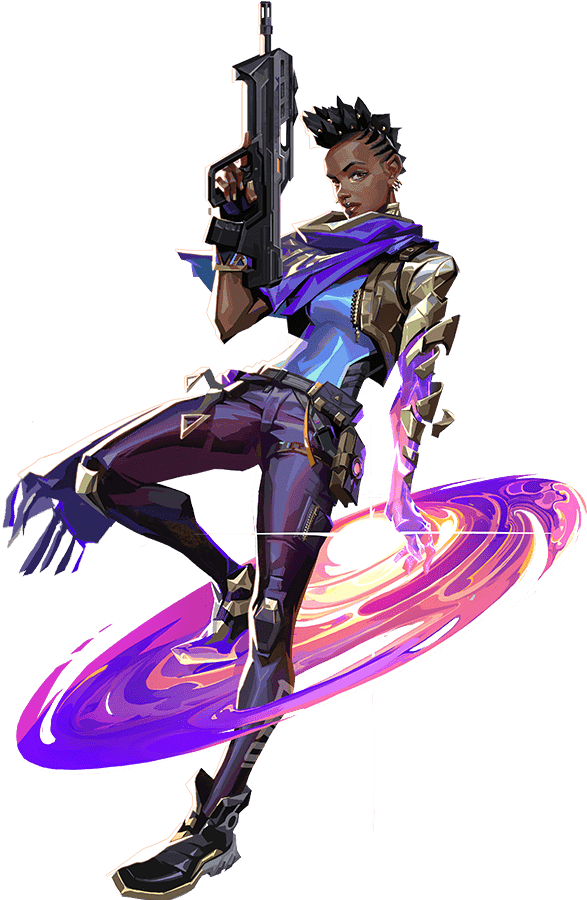
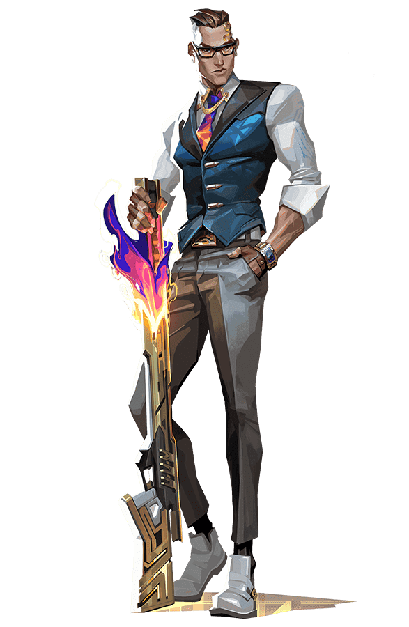
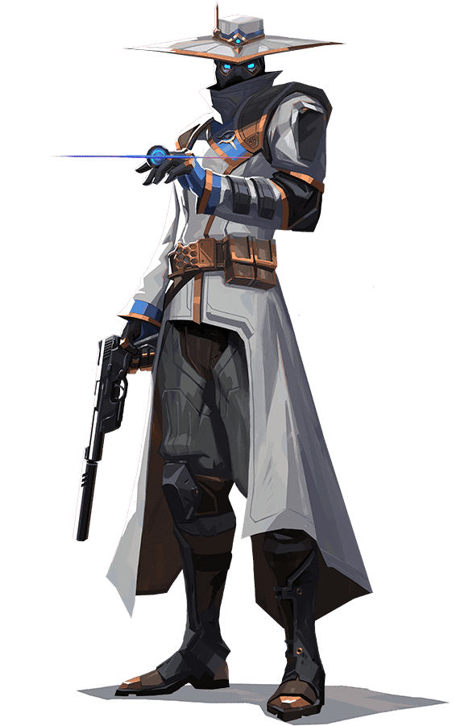
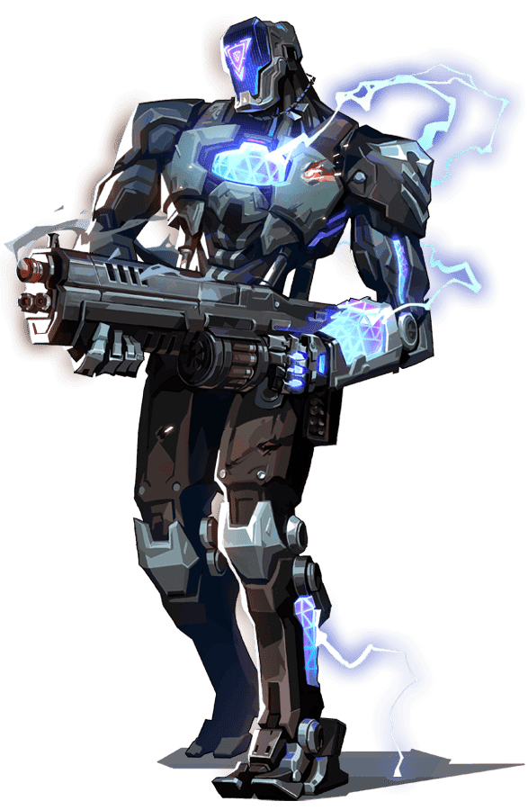
 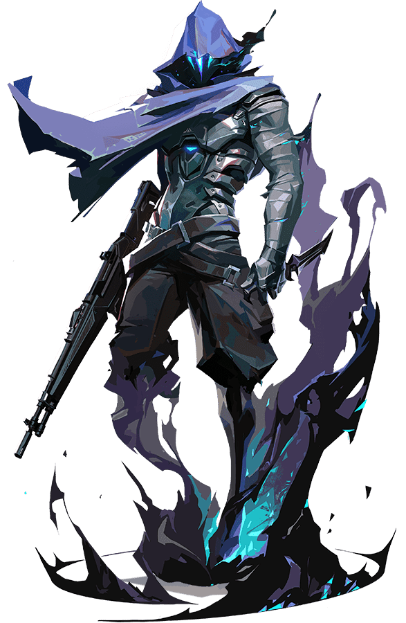
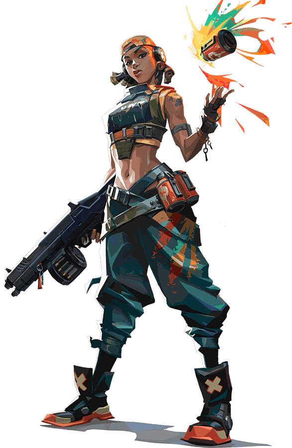
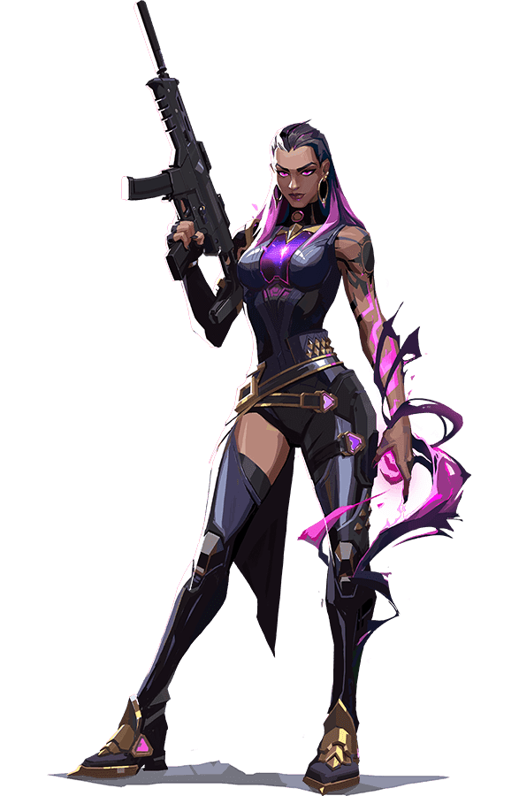
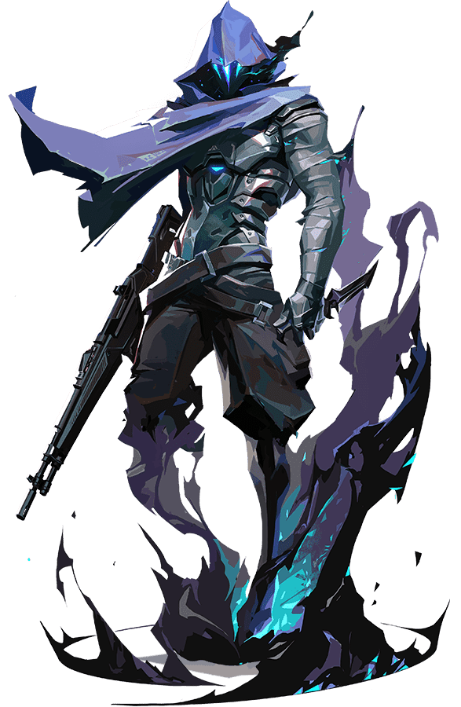
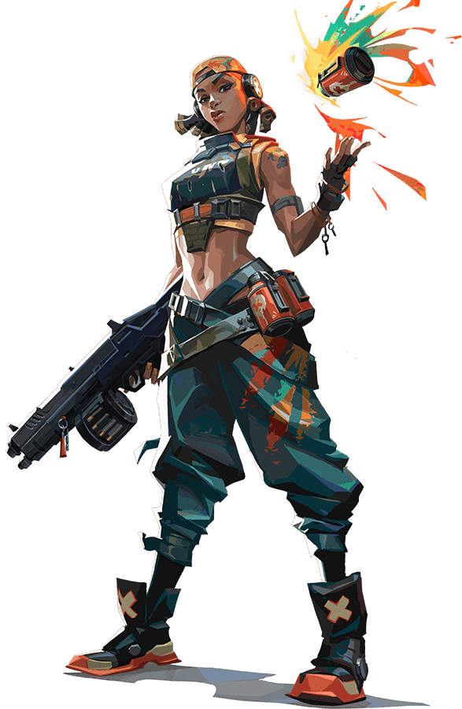
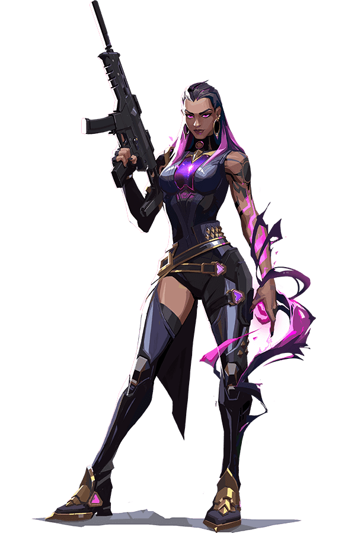


Breach
Brimstone
Jett
Phoenix
Sage
Sova
Astra
Chamber
Cypher
Kay/o
Killjoy
Neon
Omen
Raze
Reyna
Skye
Viper
Yuro
Caractéristiques :
Breach, le Suédois bionique, tire des puissantes décharges cinétiques pour ouvrir un chemin en territoire ennemi. Grâce aux dégats et diversions ainsi provoqués, aucun combat n'est jamais en sa défaveur.
Caractéristiques :
Tout droit venu des Etats-unis d'Amérique, Brimstone possède un arsenal orbital qui permet à son escouade de toujours avoir l'avantage. La précision et la fiabilité de ses compétences utilitaires font de lui un commandant sans égal sur le terrain.
Caractéristiques :
Représentante de sa patrie, la Corée du Sud, Jett dispose d'un style de combat basé sur l'agilité et l'esquive, qui lui permet de prendre des risques qu'elle seule peut se permettre de prendre. Elle tourne autour des affrontements et découpe ses ennemis avant même qu'ils ne s'en rendent compte.
Caractéristiques :
En provenance du Royaume-Uni, Phoenix illumine le champ de bataille avec ses pouvoirs astraux et son style de combat flamboyant. Peu importe que les renforts arrivent ou non, il fonce au combat quand il le décide.
Caractéristiques :
Véritable pilier originaire de Chine, Sage assure sa sécurité et celle de son équipe où qu'elle aille. Elle peut réanimer ses alliés tombés au combat et repousser les assauts ennemis pour offrir des oasis de tranquilité sur un champ de bataille infernal.
Caractéristiques :
Né dans l'hiver éternel de la toundra russe, Sova traque, trouve et élimine ses ennemis avec une efficacité et une précision redoutables. Ses incroyables talents d'éclaireur et son arc personnalisé lui garantissent que sa cible ne fuira jamais très longtemps.
Caractéristiques :
L'agent ghanéen Astra canalise les énergies du cosmos pour façonner le champ de bataille à sa convenance. Avec une maîtrise complète de sa forme astrale et un talent pour la planification stratégique, elle a toujours une large avance sur ses ennemis.
Caractéristiques :
Aussi classe que bien équipé, le concepteur d'armes français Chamber repousse les assaillants avec une précision mortelle. Il met à profit son arsenal bien particulier pour tenir sa position et éliminer les ennemis de loin en prévoyant une solution aux défis posés par chaque stratégie.
Caractéristiques :
Véritable réseau de surveillance à lui tout seul, le vendeur d'informations marocain Cypher est capable de traquer les moindres déplacements de l'ennemi. Il révèle tous les secrets. Il détecte toutes les manœuvres. Rien n'échappe à Cypher.
Caractéristiques :
Kay/o est une machine de guerre conçue dans un but précis : neutraliser les radiants. La neutralisation des compétences ennemies réduit les possibilités de riposte des adversaires, ce qui confère un avantage décisif à son équipe.
Caractéristiques :
Véritable génie originaire d'Allemagne, Killjoy sécurise et défend les positions clés à l'aide de pièges, de tourelles et de mines. Ses inventions punissent tout agresseur trop idiot pour abandonner.
Caractéristiques :
Originaire des Philippines, Neon traverse le champ de bataille à une vitesse fulgurante, libérant de grosses décharges de radiance bioélectrique générées par son corps. Elle contourne les ennemis pour les prendre par surprise et les éliminer en un éclair.
Caractéristiques :
Spectre d'un souvenir, Omen chasse dans les ténèbres. Il aveugle les ennemis, se téléporte d'un bout à l'autre du champ de bataille et laisse la peur se répandre parmi ses adversaires qui se demandent qui sera sa prochaine victime.
Caractéristiques :
Armée de sa personnalité et de sa grosse artillerie, Raze fait une entrée explosive depuis le Brésil. Grâce à sa force brute, elle excelle à débusquer les ennemis retranchés et à faire le ménage dans les espaces étroits, le tout avec une bonne dose de BOUM.
Caractéristiques :
Experte des combats singuliers formée au cœur du Mexique, Reyna se renforce à chaque élimination qu'elle réussit. Son efficacité n'est limitée que par son habileté, ce qui la rend très dépendante de ses propres performances.
Caractéristiques :
Originaire d'Australie, Skye et sa bande de bêtes sauvages ouvrent la voie à travers les territoires hostiles. Grâce à ses créations qui entravent l'ennemi et à sa faculté à soigner les autres, l'équipe est plus forte et plus en sécurité quand elle compte Skye dans ses rangs.
Caractéristiques :
Viper est une chimiste américaine qui déploie un arsenal d'appareils toxiques pour contrôler le champ de bataille et handicaper la vision des ennemis. Si les toxines ne suffisent pas à abattre sa proie, ses machinations finiront le travail.
Caractéristiques :
Le Japonais Yuro perce des trous dans la réalité pour s'infiltrer derrière les lignes ennemies sans se faire repérer. En faisant preuve d'autant de ruse que d'agressivité, il prend ses cibles par surprise avant qu'elles n'aient le temps de se retourner.